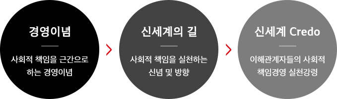

사회적 책임경영의 가치체계
경영이념
기업의 사회적 책임 수행
신세계그룹은 초일류 유통기업으로서 이해관계자들에게 책임과 사명을 다하는 사회적 책임경영을 지속 발전시켜 나가고자 합니다.
신세계그룹 사회적 책임경영 선포
신세계그룹은 2013년 기업 경영 패러다임을 사회적 책임경영으로 선언했습니다. 법과 양심에 따른 정직하고 투명한 경영, 사내 전 임직원과 회사가 힘을 합치고 참여하는 자발적인 사회공헌, 기업의 성장과 고용유지를 통한 국가 경 제발전에 기여한다는 근본 철학을 가지고 사회적 책임수행을 위해 노력하고 있습니다.
신세계의 길
우리는 신뢰와 존중을 바탕으로 임직원의 보람과 행복을 중시한다. 우리는 법과 원칙을 준수하고 투명한 경영활동을 실천한다. 우리는 투명하고 공정한 거래를 통해 협력회사와의 동반성장을 실현한다. 우리는 환경보호와 사회공헌에 대한 기업의 사회적 책임을 다한다. 우리는 고객을 최우선으로 생각하고 고객이 원하는 참된 가치를 제공한다.윤리강령
신세계CREDO 실천원칙
신세계 임직원 모두는 기업의 사회적 책임경영 실천을 위해 다음 사항을 반드시 준수합니다.
- 신세계 임직원은 어떠한 상황에서도 준법경영의 원칙을 준수합니다.
- 목표달성을 위해 사실을 왜곡하지 않으며, 모든 업무 사항은 적시에 정확하게 보고합니다.
- 모든 업무활동에서 공과 사를 명확하게 구분하며 회사의 정보와 자산을 소중히 하여 유용하지 않습니다.
- 사원 상호간 예절을 준수하고 성희롱, 폭언 등 동료에게 부적절한 언행을 하지 않습니다.
- 부당한 지시는 해서도 안되고 그 지시를 따라서도 안됩니다.
- 건전한 기업문화 조성을 위해 상사에 대한 선물 등 청탁행위를 하지 않으며, 업무 실적과 능력에 따라 합리적이며 공정한 평가를 합니다.
- 사내·외 이해관계자로부터 어떠한 경우라도 금품, 향응 등 금전적인 편익을 취하거나 요구해서는 안되며 신세계페이를 적극 실천합니다.
- 고객만족을 경영활동의 최우선 가치로 하며, 고객과의 약속은 고객의 입장에서 합리적인 결정이 이루어지도록 합니다.
- 고객의 재산과 정보는 회사 자산과 동일하게 보호하며 고객의 사전 승인 없이 무단으로 사용하거나 공개하지 않습니다.
- 협력회사 및 외부 이해관계자와 동반성장의 관계를 구축하고, 외부경쟁자와 법과 상도의에 따라 공정하게 경쟁하며 거래합니다.
- 친환경경영, 사회봉사활동에 참여하여 사회공동체에 기여하고 자발적인 기부문화 확산에 적극 동참합니다.
- 신세계 CREDO 및 회사규정을 위반하거나 위반이 의심되는 경우 반드시 보고합니다.